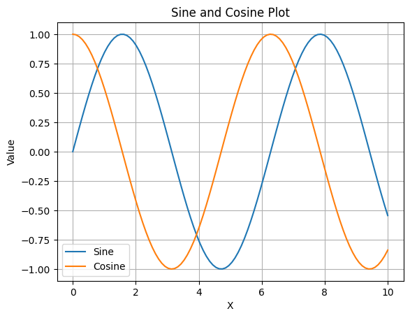
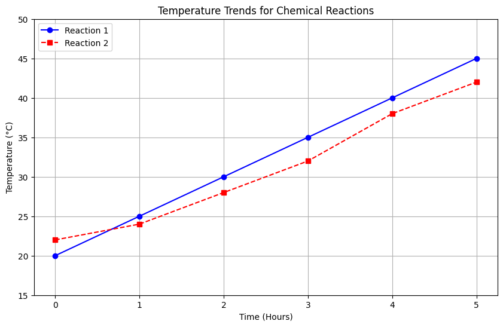

Introduction to NumPy
What is NumPy?
NumPy, short for Numerical Python, is a powerful library for numerical computations in Python. It provides support for large, multi-dimensional arrays and matrices, along with a collection of mathematical functions to operate on these arrays. NumPy is a fundamental package for scientific computing in Python and serves as the foundation for many other scientific libraries, such as SciPy, Pandas, and Matplotlib.
Importance in Scientific Computing, Data Analysis, and Machine Learning:
- Scientific Computing: NumPy's efficient array operations and mathematical functions make it ideal for scientific research and simulations.
- Data Analysis: NumPy arrays are used extensively in data manipulation and analysis, providing a backbone for data structures in libraries like Pandas.
- Machine Learning: Many machine learning algorithms rely on NumPy for data preprocessing, model training, and evaluation due to its speed and efficiency.
Features of NumPy
1. Multidimensional Arrays:
NumPy introduces the ndarray object, which is a fast and space-efficient multidimensional array.
import numpy as np
arr = np.array([[1, 2, 3], [4, 5, 6]])
print(arr)This creates a 2x3 array.
2. Broadcasting:
Broadcasting allows NumPy to perform element-wise operations on arrays of different shapes.
a = np.array([1, 2, 3])
b = np.array([4])
print(a + b) # Output: [5 6 7]3. Fast Operations:
NumPy operations are implemented in C, making them much faster than equivalent Python code.
a = np.arange(1000000)
b = np.arange(1000000)
c = a + b # This operation is very fast4. Integration with Other Libraries:
NumPy integrates seamlessly with other scientific libraries like SciPy, Pandas, and Matplotlib, enhancing its functionality and ease of use.
Installing NumPy
1. Using pip:
pip install numpy2. Using conda:
conda install numpy3. From Source:
Download the source code from the NumPy GitHub repository. Navigate to the directory containing the source code and run:
python setup.py installNumPy vs Python Lists
1. Performance:
NumPy arrays are more efficient than Python lists due to their fixed size and homogeneous data type.
import time
import numpy as np
size = 1000000
list1 = list(range(size))
list2 = list(range(size))
start = time.time()
result = [x + y for x, y in zip(list1, list2)]
print("Python list time:", time.time() - start)
array1 = np.arange(size)
array2 = np.arange(size)
start = time.time()
result = array1 + array2
print("NumPy array time:", time.time() - start)2. Memory Usage:
NumPy arrays consume less memory compared to Python lists due to their compact storage.
import sys
import numpy as np
list1 = list(range(1000))
array1 = np.arange(1000)
print("Python list size:", sys.getsizeof(list1))
print("NumPy array size:", array1.nbytes)3. Functionality:
NumPy provides a wide range of mathematical functions and operations that are not available with Python lists.
import numpy as np
array = np.array([1, 2, 3])
print(np.mean(array)) # Output: 2.0
print(np.std(array)) # Output: 0.816496580927726NumPy Arrays
Creating Arrays
NumPy provides several functions to create arrays, each serving different purposes. Here, we'll discuss how to create arrays using array(), zeros(), ones(), empty(), and arange(), along with practical examples.
Using array()
The array() function is used to create an array from a list or a tuple.
Example 1: Creating a 1D array from a list
import numpy as np
list_data = [1, 2, 3, 4, 5]
array_1d = np.array(list_data)
print(array_1d)This code converts a Python list into a NumPy 1D array.
Example 2: Creating a 2D array from a list of lists
import numpy as np
list_of_lists = [[1, 2, 3], [4, 5, 6]]
array_2d = np.array(list_of_lists)
print(array_2d)This code converts a list of lists into a NumPy 2D array.
Using zeros()
The zeros() function creates an array filled with zeros. You can specify the shape of the array.
Example 1: Creating a 1D array of zeros
import numpy as np
array_zeros_1d = np.zeros(5)
print(array_zeros_1d)This creates a 1D array with five zeros.
Example 2: Creating a 2D array of zeros
import numpy as np
array_zeros_2d = np.zeros((3, 4))
print(array_zeros_2d)This creates a 3x4 array filled with zeros.
Using ones()
The ones() function creates an array filled with ones. You can specify the shape of the array.
Example 1: Creating a 1D array of ones
import numpy as np
array_ones_1d = np.ones(5)
print(array_ones_1d)This creates a 1D array with five ones.
Example 2: Creating a 2D array of ones
import numpy as np
array_ones_2d = np.ones((2, 3))
print(array_ones_2d)This creates a 2x3 array filled with ones.
Using empty()
The empty() function creates an array without initializing its entries. The values in the array are whatever happens to be in memory at that location.
Example 1: Creating a 1D empty array
import numpy as np
array_empty_1d = np.empty(5)
print(array_empty_1d)This creates a 1D array with uninitialized values.
Example 2: Creating a 2D empty array
import numpy as np
array_empty_2d = np.empty((2, 3))
print(array_empty_2d)This creates a 2x3 array with uninitialized values.
Using arange()
The arange() function creates an array with evenly spaced values within a given interval.
Example 1: Creating a range of values from 0 to 9
import numpy as np
array_range = np.arange(10)
print(array_range)This creates a 1D array with values from 0 to 9.
Example 2: Creating a range of values with a step size
import numpy as np
array_range_step = np.arange(0, 10, 2)
print(array_range_step)This creates a 1D array with values from 0 to 8, with a step size of 2.
Array Data Types
Importance of Data Types
In NumPy, data types (dtypes) are crucial because they define the type of elements stored in an array. This affects the array's memory usage and the operations that can be performed on it. NumPy supports a variety of data types, including integers, floats, complex numbers, and more. Understanding and specifying data types can lead to more efficient and error-free code.
Key Points:
- Memory Efficiency: Choosing the appropriate data type can save memory. For example, using
int8instead ofint64for small integers. - Performance: Operations on arrays with specific data types can be faster.
- Precision: Selecting the right data type ensures the precision needed for calculations.
Specifying Data Types
You can specify the data type of a NumPy array when you create it using the dtype parameter.
Example 1: Creating an array with integer data type
import numpy as np
array_int = np.array([1, 2, 3, 4], dtype=np.int32)
print(array_int)
print(array_int.dtype)This creates an array of integers with the int32 data type.
Example 2: Creating an array with float data type
import numpy as np
array_float = np.array([1.1, 2.2, 3.3, 4.4], dtype=np.float64)
print(array_float)
print(array_float.dtype)This creates an array of floats with the float64 data type.
Converting Data Types
You can convert the data type of an existing array using the astype() method.
Example 1: Converting an integer array to float
import numpy as np
array_int = np.array([1, 2, 3, 4], dtype=np.int32)
array_float = array_int.astype(np.float64)
print(array_float)
print(array_float.dtype)This converts an integer array to a float array.
Example 2: Converting a float array to integer
import numpy as np
array_float = np.array([1.1, 2.2, 3.3, 4.4], dtype=np.float64)
array_int = array_float.astype(np.int32)
print(array_int)
print(array_int.dtype)This converts a float array to an integer array, truncating the decimal part.
Common Data Types in NumPy
- Integer Types:
int8,int16,int32,int64 - Unsigned Integer Types:
uint8,uint16,uint32,uint64 - Float Types:
float16,float32,float64 - Complex Types:
complex64,complex128
Benefits and Use Cases
- Memory Optimization: Using smaller data types like
int8orfloat16can significantly reduce memory usage in large datasets. - Performance Improvement: Operations on arrays with specific data types can be optimized for speed.
- Precision Control: Ensuring the right level of precision for scientific calculations by choosing appropriate float or complex types.
Common Pitfalls and Troubleshooting Tips
Overflow Errors:
Using a data type that is too small can lead to overflow errors. For example, using int8 for large integers.
import numpy as np
array_small_int = np.array([127], dtype=np.int8)
array_small_int += 1
print(array_small_int) # Output: -128 (overflow)Loss of Precision:
Converting from a higher precision type to a lower precision type can result in loss of data.
import numpy as np
array_high_precision = np.array([1.123456789], dtype=np.float64)
array_low_precision = array_high_precision.astype(np.float32)
print(array_low_precision) # Output: [1.1234568]Array Shape and Dimension
Shape
The shape of a NumPy array is a tuple that indicates the size of the array along each dimension. It is accessed using the shape attribute.
Example 1: Checking the shape of a 1D array
import numpy as np
array_1d = np.array([1, 2, 3, 4, 5])
print(array_1d.shape) # Output: (5,)This shows that the array has 5 elements in one dimension.
Example 2: Checking the shape of a 2D array
import numpy as np
array_2d = np.array([[1, 2, 3], [4, 5, 6]])
print(array_2d.shape) # Output: (2, 3)This indicates that the array has 2 rows and 3 columns.
ndim
The ndim attribute returns the number of dimensions (axes) of the array.
Example 1: Checking the number of dimensions of a 1D array
import numpy as np
array_1d = np.array([1, 2, 3, 4, 5])
print(array_1d.ndim) # Output: 1This confirms that the array is one-dimensional.
Example 2: Checking the number of dimensions of a 3D array
import numpy as np
array_3d = np.array([[[1, 2], [3, 4]], [[5, 6], [7, 8]]])
print(array_3d.ndim) # Output: 3This shows that the array has three dimensions.
Resizing Arrays
Resizing arrays can be done using the reshape() method, which returns a new array with the specified shape, or the resize() method, which modifies the array in place.
Example 1: Using reshape() to change the shape of an array
import numpy as np
array = np.array([1, 2, 3, 4, 5, 6])
reshaped_array = array.reshape((2, 3))
print(reshaped_array)This reshapes the 1D array into a 2x3 array.
Example 2: Using resize() to change the shape of an array in place
import numpy as np
array = np.array([1, 2, 3, 4, 5, 6])
array.resize((3, 2))
print(array)This resizes the array to a 3x2 array, modifying the original array.
Deep Dive into Different Models
Flattening an Array:
Flattening converts a multi-dimensional array into a 1D array.
Example 1: Using flatten() method
import numpy as np
array_2d = np.array([[1, 2, 3], [4, 5, 6]])
flattened_array = array_2d.flatten()
print(flattened_array) # Output: [1 2 3 4 5 6]Example 2: Using ravel() method
import numpy as np
array_2d = np.array([[1, 2, 3], [4, 5, 6]])
raveled_array = array_2d.ravel()
print(raveled_array) # Output: [1 2 3 4 5 6]Expanding Dimensions:
Expanding dimensions can be done using np.newaxis or expand_dims().
Example 1: Using np.newaxis
import numpy as np
array_1d = np.array([1, 2, 3])
expanded_array = array_1d[:, np.newaxis]
print(expanded_array)This adds a new axis, converting the 1D array into a 2D column vector.
Example 2: Using expand_dims()
import numpy as np
array_1d = np.array([1, 2, 3])
expanded_array = np.expand_dims(array_1d, axis=0)
print(expanded_array)This adds a new axis, converting the 1D array into a 2D row vector.
Indexing in NumPy
Basic Indexing
Indexing in NumPy allows you to access individual elements of an array using their indices. NumPy arrays are zero-indexed, meaning the first element has an index of 0.
Example 1: Indexing a 1D array
import numpy as np
array_1d = np.array([10, 20, 30, 40, 50])
print(array_1d[0]) # Output: 10
print(array_1d[3]) # Output: 40This accesses the first and fourth elements of the array.
Example 2: Indexing a 2D array
import numpy as np
array_2d = np.array([[1, 2, 3], [4, 5, 6], [7, 8, 9]])
print(array_2d[0, 1]) # Output: 2
print(array_2d[2, 2]) # Output: 9This accesses the element in the first row, second column, and the element in the third row, third column.
Slicing in NumPy
Slicing allows you to access a range of elements in an array. The syntax for slicing is start:stop:step.
Example 1: Slicing a 1D array
import numpy as np
array_1d = np.array([10, 20, 30, 40, 50])
print(array_1d[1:4]) # Output: [20 30 40]
print(array_1d[:3]) # Output: [10 20 30]This slices the array to get elements from index 1 to 3 and from the start to index 2.
Example 2: Slicing a 2D array
import numpy as np
array_2d = np.array([[1, 2, 3], [4, 5, 6], [7, 8, 9]])
print(array_2d[1:, 1:]) # Output: [[5 6] [8 9]]
print(array_2d[:2, :2]) # Output: [[1 2] [4 5]]This slices the array to get a sub-array from the second row and second column onwards, and another sub-array from the first two rows and columns.
Boolean Indexing in NumPy
Boolean indexing allows you to select elements from an array using boolean conditions.
Example 1: Boolean indexing with a condition
import numpy as np
array_1d = np.array([10, 20, 30, 40, 50])
bool_idx = array_1d > 25
print(array_1d[bool_idx]) # Output: [30 40 50]This selects elements greater than 25.
Example 2: Boolean indexing with multiple conditions
import numpy as np
array_2d = np.array([[1, 2, 3], [4, 5, 6], [7, 8, 9]])
bool_idx = (array_2d > 2) & (array_2d < 8)
print(array_2d[bool_idx]) # Output: [3 4 5 6 7]This selects elements greater than 2 and less than 8.
Advanced Indexing
Integer Array Indexing
You can use arrays of integers to index another array. This allows you to construct new arrays by picking elements from the original array.
Example
import numpy as np
array_1d = np.array([10, 20, 30, 40, 50])
indices = np.array([0, 2, 4])
print(array_1d[indices]) # Output: [10 30 50]Fancy Indexing
Fancy indexing is similar to integer array indexing but allows for more complex selections.
Example
import numpy as np
array_2d = np.array([[1, 2, 3], [4, 5, 6], [7, 8, 9]])
rows = np.array([0, 1, 2])
cols = np.array([2, 1, 0])
print(array_2d[rows, cols]) # Output: [3 5 7]Combining Indexing and Slicing
You can combine different types of indexing and slicing to access more complex parts of arrays.
Example
import numpy as np
array_2d = np.array([[1, 2, 3], [4, 5, 6], [7, 8, 9]])
print(array_2d[1:, [0, 2]]) # Output: [[4 6] [7 9]]Array Operations in NumPy
NumPy provides a wide range of mathematical operations that can be performed on arrays. These operations are element-wise, meaning they are applied to each element of the array individually. Let's explore addition, subtraction, multiplication, division, and broadcasting with practical examples.
Addition
You can add two arrays element-wise using the + operator or the np.add() function.
Example 1: Adding two 1D arrays
import numpy as np
array1 = np.array([1, 2, 3])
array2 = np.array([4, 5, 6])
result = array1 + array2
print(result) # Output: [5 7 9]Example 2: Adding two 2D arrays
import numpy as np
array1 = np.array([[1, 2], [3, 4]])
array2 = np.array([[5, 6], [7, 8]])
result = np.add(array1, array2)
print(result) # Output: [[ 6 8] [10 12]]Subtraction
You can subtract one array from another element-wise using the - operator or the np.subtract() function.
Example 1: Subtracting two 1D arrays
import numpy as np
array1 = np.array([10, 20, 30])
array2 = np.array([1, 2, 3])
result = array1 - array2
print(result) # Output: [ 9 18 27]Example 2: Subtracting two 2D arrays
import numpy as np
array1 = np.array([[10, 20], [30, 40]])
array2 = np.array([[1, 2], [3, 4]])
result = np.subtract(array1, array2)
print(result) # Output: [[ 9 18] [27 36]]Multiplication
Element-wise multiplication can be performed using the * operator or the np.multiply() function.
Example 1: Multiplying two 1D arrays
import numpy as np
array1 = np.array([1, 2, 3])
array2 = np.array([4, 5, 6])
result = array1 * array2
print(result) # Output: [ 4 10 18]Example 2: Multiplying two 2D arrays
import numpy as np
array1 = np.array([[1, 2], [3, 4]])
array2 = np.array([[5, 6], [7, 8]])
result = np.multiply(array1, array2)
print(result) # Output: [[ 5 12] [21 32]]Division
Element-wise division can be performed using the / operator or the np.divide() function.
Example 1: Dividing two 1D arrays
import numpy as np
array1 = np.array([10, 20, 30])
array2 = np.array([2, 4, 5])
result = array1 / array2
print(result) # Output: [5. 5. 6.]Example 2: Dividing two 2D arrays
import numpy as np
array1 = np.array([[10, 20], [30, 40]])
array2 = np.array([[2, 4], [5, 8]])
result = np.divide(array1, array2)
print(result) # Output: [[5. 5.] [6. 5.]]Broadcasting
Broadcasting allows NumPy to perform element-wise operations on arrays of different shapes. This is particularly useful when you need to perform operations between arrays of different dimensions.
Example 1: Broadcasting a scalar to a 1D array
import numpy as np
array = np.array([1, 2, 3])
scalar = 2
result = array * scalar
print(result) # Output: [2 4 6]Example 2: Broadcasting a 1D array to a 2D array
import numpy as np
array_2d = np.array([[1, 2, 3], [4, 5, 6]])
array_1d = np.array([1, 2, 3])
result = array_2d + array_1d
print(result) # Output: [[ 2 4 6] [ 5 7 9]]Aggregation Functions
NumPy provides a variety of aggregation functions that allow you to perform operations like summing, averaging, finding the minimum and maximum values, and more. These functions can be applied to entire arrays or along specific axes.
Sum
The sum() function adds up all the elements in an array. You can also specify an axis to sum along.
Example 1: Summing all elements in a 1D array
import numpy as np
array = np.array([1, 2, 3, 4, 5])
total_sum = np.sum(array)
print(total_sum) # Output: 15Example 2: Summing elements along an axis in a 2D array
import numpy as np
array = np.array([[1, 2, 3], [4, 5, 6]])
sum_along_axis0 = np.sum(array, axis=0)
sum_along_axis1 = np.sum(array, axis=1)
print(sum_along_axis0) # Output: [5 7 9]
print(sum_along_axis1) # Output: [ 6 15]Example 3: Summing elements along both axes in a 3D array
import numpy as np
array = np.array([[[1, 2], [3, 4]], [[5, 6], [7, 8]]])
sum_along_axis0 = np.sum(array, axis=0)
sum_along_axis1 = np.sum(array, axis=1)
sum_along_axis2 = np.sum(array, axis=2)
print(sum_along_axis0) # Output: [[ 6 8] [10 12]]
print(sum_along_axis1) # Output: [[ 4 6] [12 14]]
print(sum_along_axis2) # Output: [[ 3 7] [11 15]]Mean
The mean() function calculates the average of the elements in an array. You can also specify an axis to calculate the mean along.
Example 1: Calculating the mean of all elements in a 1D array
import numpy as np
array = np.array([1, 2, 3, 4, 5])
average = np.mean(array)
print(average) # Output: 3.0Example 2: Calculating the mean along an axis in a 2D array
import numpy as np
array = np.array([[1, 2, 3], [4, 5, 6]])
mean_along_axis0 = np.mean(array, axis=0)
mean_along_axis1 = np.mean(array, axis=1)
print(mean_along_axis0) # Output: [2.5 3.5 4.5]
print(mean_along_axis1) # Output: [2. 5.]Example 3: Calculating the mean along both axes in a 3D array
import numpy as np
array = np.array([[[1, 2], [3, 4]], [[5, 6], [7, 8]]])
mean_along_axis0 = np.mean(array, axis=0)
mean_along_axis1 = np.mean(array, axis=1)
mean_along_axis2 = np.mean(array, axis=2)
print(mean_along_axis0) # Output: [[3. 4.] [5. 6.]]
print(mean_along_axis1) # Output: [[2. 3.] [6. 7.]]
print(mean_along_axis2) # Output: [[1.5 3.5] [5.5 7.5]]Min
The min() function finds the minimum value in an array. You can also specify an axis to find the minimum along.
Example 1: Finding the minimum value in a 1D array
import numpy as np
array = np.array([1, 2, 3, 4, 5])
minimum_value = np.min(array)
print(minimum_value) # Output: 1Example 2: Finding the minimum value along an axis in a 2D array
import numpy as np
array = np.array([[1, 2, 3], [4, 5, 6]])
min_along_axis0 = np.min(array, axis=0)
min_along_axis1 = np.min(array, axis=1)
print(min_along_axis0) # Output: [1 2 3]
print(min_along_axis1) # Output: [1 4]Example 3: Finding the minimum value along both axes in a 3D array
import numpy as np
array = np.array([[[1, 2], [3, 4]], [[5, 6], [7, 8]]])
min_along_axis0 = np.min(array, axis=0)
min_along_axis1 = np.min(array, axis=1)
min_along_axis2 = np.min(array, axis=2)
print(min_along_axis0) # Output: [[1 2] [3 4]]
print(min_along_axis1) # Output: [[1 2] [5 6]]
print(min_along_axis2) # Output: [[1 3] [5 7]]Max
The max() function finds the maximum value in an array. You can also specify an axis to find the maximum along.
Example 1: Finding the maximum value in a 1D array
import numpy as np
array = np.array([1, 2, 3, 4, 5])
maximum_value = np.max(array)
print(maximum_value) # Output: 5Example 2: Finding the maximum value along an axis in a 2D array
import numpy as np
array = np.array([[1, 2, 3], [4, 5, 6]])
max_along_axis0 = np.max(array, axis=0)
max_along_axis1 = np.max(array, axis=1)
print(max_along_axis0) # Output: [4 5 6]
print(max_along_axis1) # Output: [3 6]Example 3: Finding the maximum value along both axes in a 3D arrayExample 3: Finding the maximum value along both axes in a 3D array
import numpy as np
array = np.array([[[1, 2], [3, 4]], [[5, 6], [7, 8]]])
max_along_axis0 = np.max(array, axis=0)
max_along_axis1 = np.max(array, axis=1)
max_along_axis2 = np.max(array, axis=2)
print(max_along_axis0) # Output: [[5 6] [7 8]]
print(max_along_axis1) # Output: [[3 4] [7 8]]
print(max_along_axis2) # Output: [[2 4] [6 8]]
Axis-Based Operations
import numpy as np
array = np.array([[[1, 2], [3, 4]], [[5, 6], [7, 8]]])
max_along_axis0 = np.max(array, axis=0)
max_along_axis1 = np.max(array, axis=1)
max_along_axis2 = np.max(array, axis=2)
print(max_along_axis0) # Output: [[5 6] [7 8]]
print(max_along_axis1) # Output: [[3 4] [7 8]]
print(max_along_axis2) # Output: [[2 4] [6 8]]Aggregation functions can be applied along specific axes of an array. The axis parameter specifies the axis along which the operation is performed.
Example 1: Summing along different axes
import numpy as np
array = np.array([[1, 2, 3], [4, 5, 6]])
sum_axis0 = np.sum(array, axis=0) # Sum along columns
sum_axis1 = np.sum(array, axis=1) # Sum along rows
print(sum_axis0) # Output: [5 7 9]
print(sum_axis1) # Output: [ 6 15]Example 2: Calculating the mean along different axes
import numpy as np
array = np.array([[1, 2, 3], [4, 5, 6]])
mean_axis0 = np.mean(array, axis=0) # Mean along columns
mean_axis1 = np.mean(array, axis=1) # Mean along rows
print(mean_axis0) # Output: [2.5 3.5 4.5]
print(mean_axis1) # Output: [2. 5.]Example 3: Finding the minimum and maximum along different axes
import numpy as np
array = np.array([[1, 2, 3], [4, 5, 6]])
min_axis0 = np.min(array, axis=0) # Min along columns
max_axis0 = np.max(array, axis=0) # Max along columns
min_axis1 = np.min(array, axis=1) # Min along rows
max_axis1 = np.max(array, axis=1) # Max along rows
print(min_axis0) # Output: [1 2 3]
print(max_axis0) # Output: [4 5 6]
print(min_axis1) # Output: [1 4]
print(max_axis1) # Output: [3 6]Element-wise Operations
Universal Functions (ufuncs)
Universal functions, or ufuncs, are a core feature of NumPy that allow you to perform element-wise operations on arrays. These functions operate on each element of the array independently, making them highly efficient for numerical computations. Some common ufuncs include np.sin, np.log, np.exp, and many others.
1. np.sin
The np.sin function computes the trigonometric sine of each element in the array. The input array should contain angles in radians.
Example 1: Applying np.sin to a 1D array
import numpy as np
angles = np.array([0, np.pi/2, np.pi])
sine_values = np.sin(angles)
print(sine_values) # Output: [0. 1. 0.]This calculates the sine of 0, π/2, and π.
Example 2: Applying np.sin to a 2D array
import numpy as np
angles = np.array([[0, np.pi/4], [np.pi/2, np.pi]])
sine_values = np.sin(angles)
print(sine_values)This calculates the sine of each element in the 2D array.
2. np.log
The np.log function computes the natural logarithm (base e) of each element in the array. The input array should contain positive numbers.
Example 1: Applying np.log to a 1D array
import numpy as np
values = np.array([1, np.e, np.e**2])
log_values = np.log(values)
print(log_values) # Output: [0. 1. 2.]This calculates the natural logarithm of 1, e, and e².
Example 2: Applying np.log to a 2D array
import numpy as np
values = np.array([[1, 10], [100, 1000]])
log_values = np.log(values)
print(log_values)This calculates the natural logarithm of each element in the 2D array.
Benefits and Use Cases
- Efficiency: Ufuncs are implemented in C, making them much faster than equivalent Python loops.
- Broadcasting: Ufuncs support broadcasting, allowing operations on arrays of different shapes.
- Vectorization: Ufuncs enable vectorized operations, which are more efficient and concise than looping over array elements.
Common Pitfalls and Troubleshooting Tips
Domain Errors
Ensure that the input values are within the domain of the function. For example, np.log requires positive numbers.
import numpy as np
values = np.array([-1, 0, 1])
try:
log_values = np.log(values)
except ValueError as e:
print(e) # Output: ValueError: invalid value encountered in logPrecision Issues
Be aware of precision issues when dealing with very large or very small numbers.
import numpy as np
large_values = np.array([1e10, 1e20, 1e30])
log_values = np.log(large_values)
print(log_values) # Output: [23.02585093 46.05170186 69.07755279]Sorting and Searching
Sorting
NumPy provides the sort() function to sort the elements of an array. This function can sort arrays in ascending order by default, and it can also sort along a specified axis.
Example 1: Sorting a 1D array
import numpy as np
array = np.array([3, 1, 2, 5, 4])
sorted_array = np.sort(array)
print(sorted_array) # Output: [1 2 3 4 5]This sorts the elements of the array in ascending order.
Example 2: Sorting a 2D array along an axis
import numpy as np
array = np.array([[3, 1, 2], [5, 4, 6]])
sorted_array_axis0 = np.sort(array, axis=0)
sorted_array_axis1 = np.sort(array, axis=1)
print(sorted_array_axis0)
# Output:
# [[3 1 2]
# [5 4 6]]
print(sorted_array_axis1)
# Output:
# [[1 2 3]
# [4 5 6]]This sorts the array along the specified axis (0 for columns, 1 for rows).
Example 3: Sorting a 3D array
import numpy as np
array = np.array([[[3, 1, 2], [6, 5, 4]], [[9, 7, 8], [12, 11, 10]]])
sorted_array = np.sort(array, axis=2)
print(sorted_array)
# Output:
# [[[ 1 2 3]
# [ 4 5 6]]
# [[ 7 8 9]
# [10 11 12]]]This sorts the 3D array along the third axis.
argsort()
The argsort() function returns the indices that would sort an array. This is useful for indirect sorting, where you need the sorted order of indices rather than the sorted values themselves.
Example 1: Using argsort() on a 1D array
import numpy as np
array = np.array([3, 1, 2, 5, 4])
sorted_indices = np.argsort(array)
print(sorted_indices) # Output: [1 2 0 4 3]This returns the indices that would sort the array.
Example 2: Using argsort() on a 2D array
import numpy as np
array = np.array([[3, 1, 2], [5, 4, 6]])
sorted_indices_axis0 = np.argsort(array, axis=0)
sorted_indices_axis1 = np.argsort(array, axis=1)
print(sorted_indices_axis0)
# Output:
# [[0 0 0]
# [1 1 1]]
print(sorted_indices_axis1)
# Output:
# [[1 2 0]
# [1 0 2]]This returns the indices that would sort the array along the specified axis.
Example 3: Using argsort() on a 3D array
import numpy as np
array = np.array([[[3, 1, 2], [6, 5, 4]], [[9, 7, 8], [12, 11, 10]]])
sorted_indices = np.argsort(array, axis=2)
print(sorted_indices)
# Output:
# [[[1 2 0]
# [2 1 0]]
# [[1 2 0]
# [2 1 0]]]This returns the indices that would sort the 3D array along the third axis.
where()
The where() function returns the indices of elements in an array that satisfy a given condition. It can also be used to select elements from two arrays based on a condition.
Example 1: Using where() to find indices of elements that satisfy a condition
import numpy as np
array = np.array([1, 2, 3, 4, 5])
indices = np.where(array > 3)
print(indices) # Output: (array([3, 4]),)This returns the indices of elements greater than 3.
Example 2: Using where() to select elements from two arrays based on a condition
import numpy as np
array1 = np.array([1, 2, 3, 4, 5])
array2 = np.array([10, 20, 30, 40, 50])
result = np.where(array1 > 3, array1, array2)
print(result) # Output: [10 20 30 4 5]This selects elements from array1 where the condition is true, and from array2 where the condition is false.
Example 3: Using where() with a 2D array
import numpy as np
array = np.array([[1, 2, 3], [4, 5, 6]])
indices = np.where(array > 3)
print(indices) # Output: (array([1, 1, 1]), array([0, 1, 2]))This returns the indices of elements greater than 3 in the 2D array.
Advanced Array Manipulations
Reshaping and Flattening
NumPy provides several functions to manipulate the shape and structure of arrays, including reshape(), ravel(), and flatten(). These functions are essential for transforming arrays to fit the needs of various operations and algorithms.
reshape()
The reshape() function allows you to change the shape of an array without changing its data. The new shape must be compatible with the original shape, meaning the total number of elements must remain the same.
Example 1: Reshaping a 1D array to a 2D array
import numpy as np
array_1d = np.array([1, 2, 3, 4, 5, 6])
array_2d = array_1d.reshape((2, 3))
print(array_2d)
# Output:
# [[1 2 3]
# [4 5 6]]Example 2: Reshaping a 2D array to a 3D array
import numpy as np
array_2d = np.array([[1, 2, 3], [4, 5, 6]])
array_3d = array_2d.reshape((2, 1, 3))
print(array_3d)
# Output:
# [[[1 2 3]]
# [[4 5 6]]]Example 3: Reshaping a 3D array to a 2D array
import numpy as np
array_3d = np.array([[[1, 2, 3], [4, 5, 6]], [[7, 8, 9], [10, 11, 12]]])
array_2d = array_3d.reshape((4, 3))
print(array_2d)
# Output:
# [[ 1 2 3]
# [ 4 5 6]
# [ 7 8 9]
# [10 11 12]]ravel()
The ravel() function returns a contiguous flattened array. Unlike flatten(), ravel() returns a view of the original array whenever possible. This means that modifying the result of ravel() may modify the original array.
Example 1: Flattening a 2D array to a 1D array
import numpy as np
array_2d = np.array([[1, 2, 3], [4, 5, 6]])
array_1d = array_2d.ravel()
print(array_1d) # Output: [1 2 3 4 5 6]Example 2: Modifying the flattened array affects the original array
import numpy as np
array_2d = np.array([[1, 2, 3], [4, 5, 6]])
array_1d = array_2d.ravel()
array_1d[0] = 99
print(array_2d)
# Output:
# [[99 2 3]
# [ 4 5 6]]Example 3: Flattening a 3D array to a 1D array
import numpy as np
array_3d = np.array([[[1, 2, 3], [4, 5, 6]], [[7, 8, 9], [10, 11, 12]]])
array_1d = array_3d.ravel()
print(array_1d) # Output: [ 1 2 3 4 5 6 7 8 9 10 11 12]flatten()
The flatten() function returns a copy of the array collapsed into one dimension. Unlike ravel(), flatten() always returns a copy, so modifications to the result do not affect the original array.
Example 1: Flattening a 2D array to a 1D array
import numpy as np
array_2d = np.array([[1, 2, 3], [4, 5, 6]])
array_1d = array_2d.flatten()
print(array_1d) # Output: [1 2 3 4 5 6]Example 2: Modifying the flattened array does not affect the original array
import numpy as np
array_2d = np.array([[1, 2, 3], [4, 5, 6]])
array_1d = array_2d.flatten()
array_1d[0] = 99
print(array_2d)
# Output:
# [[1 2 3]
# [4 5 6]]Example 3: Flattening a 3D array to a 1D array
import numpy as np
array_3d = np.array([[[1, 2, 3], [4, 5, 6]], [[7, 8, 9], [10, 11, 12]]])
array_1d = array_3d.flatten()
print(array_1d) # Output: [ 1 2 3 4 5 6 7 8 9 10 11 12]Benefits and Use Cases
- reshape(): Useful for preparing data for machine learning models, where inputs often need to be in a specific shape.
- ravel(): Efficient for temporary flattening of arrays for operations that require a 1D view without copying data.
- flatten(): Ideal when a permanent, independent flattened copy of the array is needed.
Joining and Splitting Arrays
Joining Arrays
NumPy provides several functions to join arrays, allowing you to combine multiple arrays into one. The most commonly used functions for joining arrays are concatenate(), vstack(), and hstack().
1. concatenate()
The concatenate() function joins a sequence of arrays along an existing axis.
Example 1: Concatenating 1D arrays
import numpy as np
array1 = np.array([1, 2, 3])
array2 = np.array([4, 5, 6])
result = np.concatenate((array1, array2))
print(result) # Output: [1 2 3 4 5 6]Example 2: Concatenating 2D arrays along axis 0 (rows)
import numpy as np
array1 = np.array([[1, 2], [3, 4]])
array2 = np.array([[5, 6], [7, 8]])
result = np.concatenate((array1, array2), axis=0)
print(result)
# Output:
# [[1 2]
# [3 4]
# [5 6]
# [7 8]]Example 3: Concatenating 2D arrays along axis 1 (columns)
import numpy as np
array1 = np.array([[1, 2], [3, 4]])
array2 = np.array([[5, 6], [7, 8]])
result = np.concatenate((array1, array2), axis=1)
print(result)
# Output:
# [[1 2 5 6]
# [3 4 7 8]]2. vstack()
The vstack() function stacks arrays vertically (row-wise).
Example 1: Stacking 1D arrays vertically
import numpy as np
array1 = np.array([1, 2, 3])
array2 = np.array([4, 5, 6])
result = np.vstack((array1, array2))
print(result)
# Output:
# [[1 2 3]
# [4 5 6]]Example 2: Stacking 2D arrays vertically
import numpy as np
array1 = np.array([[1, 2], [3, 4]])
array2 = np.array([[5, 6], [7, 8]])
result = np.vstack((array1, array2))
print(result)
# Output:
# [[1 2]
# [3 4]
# [5 6]
# [7 8]]3. hstack()
The hstack() function stacks arrays horizontally (column-wise).
Example 1: Stacking 1D arrays horizontally
import numpy as np
array1 = np.array([1, 2, 3])
array2 = np.array([4, 5, 6])
result = np.hstack((array1, array2))
print(result) # Output: [1 2 3 4 5 6]Example 2: Stacking 2D arrays horizontally
import numpy as np
array1 = np.array([[1, 2], [3, 4]])
array2 = np.array([[5, 6], [7, 8]])
result = np.hstack((array1, array2))
print(result)
# Output:
# [[1 2 5 6]
# [3 4 7 8]]Splitting Arrays
NumPy also provides functions to split arrays into multiple sub-arrays. The most commonly used function for splitting arrays is split().
1. split()
The split() function splits an array into multiple sub-arrays along a specified axis.
Example 1: Splitting a 1D array into equal parts
import numpy as np
array = np.array([1, 2, 3, 4, 5, 6])
result = np.split(array, 3)
print(result)
# Output: [array([1, 2]), array([3, 4]), array([5, 6])]Example 2: Splitting a 2D array along axis 1 (columns)
import numpy as np
array = np.array([[1, 2, 3], [4, 5, 6]])
result = np.split(array, 3, axis=1)
print(result)
# Output:
# [array([[1],
# [4]]),
# array([[2],
# [5]]),
# array([[3],
# [6]])]Example 3: Splitting a 2D array along axis 0 (rows)
import numpy as np
array = np.array([[1, 2, 3], [4, 5, 6], [7, 8, 9]])
result = np.split(array, 3, axis=0)
print(result)
# Output:
# [array([[1, 2, 3]]),
# array([[4, 5, 6]]),
# array([[7, 8, 9]])]Broadcasting Rules
Broadcasting is a powerful feature in NumPy that allows you to perform element-wise operations on arrays of different shapes. When operating on two arrays, NumPy compares their shapes element-wise, starting with the trailing dimensions. It applies the following rules to determine if the shapes are compatible:
- If the arrays have different numbers of dimensions, the shape of the smaller-dimensional array is padded with ones on its left side.
- If the shape of the arrays does not match in any dimension, the array with shape equal to 1 in that dimension is stretched to match the other shape.
- If the shapes are not compatible after applying the above rules, a
ValueErroris raised.
Let's explore these rules with practical examples.
Example 1: Broadcasting with a Scalar
When you perform operations between an array and a scalar, the scalar is broadcasted to the shape of the array.
Example: Adding a scalar to a 1D array
import numpy as np
array = np.array([1, 2, 3])
scalar = 5
result = array + scalar
print(result) # Output: [6 7 8]Example 2: Broadcasting with Different Dimensions
When the arrays have different numbers of dimensions, the smaller-dimensional array is padded with ones on its left side.
Example: Adding a 1D array to a 2D array
import numpy as np
array_2d = np.array([[1, 2, 3], [4, 5, 6]])
array_1d = np.array([10, 20, 30])
result = array_2d + array_1d
print(result)
# Output:
# [[11 22 33]
# [14 25 36]]Example 3: Broadcasting with Mismatched Shapes
When the shapes do not match in any dimension, the array with shape equal to 1 in that dimension is stretched to match the other shape.
Example: Multiplying a 2D array with a 1D array
import numpy as np
array_2d = np.array([[1, 2, 3], [4, 5, 6]])
array_1d = np.array([1, 2, 3])
result = array_2d * array_1d
print(result)
# Output:
# [[ 1 4 9]
# [ 4 10 18]]Example 4: Incompatible Shapes
If the shapes are not compatible after applying the broadcasting rules, a ValueError is raised.
Example: Attempting to add arrays with incompatible shapes
import numpy as np
array_2d = np.array([[1, 2, 3], [4, 5, 6]])
array_1d = np.array([1, 2])
try:
result = array_2d + array_1d
except ValueError as e:
print(e) # Output: operands could not be broadcast together with shapes (2,3) (4,)Benefits and Use Cases
- Memory Efficiency: Broadcasting avoids the need to create large intermediate arrays, saving memory.
- Code Simplicity: It allows for more concise and readable code by eliminating the need for explicit loops.
- Performance: Broadcasting operations are implemented in C, making them faster than equivalent Python loops.
Handling Missing Data
In data analysis, it's common to encounter missing or undefined data. NumPy provides several tools to handle such cases, including np.nan, np.isnan(), and np.nanmean(). These tools help you manage and analyze datasets with missing values effectively.
np.nan
np.nan is a special floating-point value that represents "Not a Number." It is used to denote missing or undefined data in NumPy arrays.
Example 1: Creating an array with missing values
import numpy as np
array_with_nan = np.array([1, 2, np.nan, 4, 5])
print(array_with_nan)
# Output: [ 1. 2. nan 4. 5.]Example 2: Using np.nan in a 2D array
import numpy as np
array_with_nan = np.array([[1, 2, 3], [4, np.nan, 6]])
print(array_with_nan)
# Output:
# [[ 1. 2. 3.]
# [ 4. nan 6.]]np.isnan()
The np.isnan() function returns a boolean array indicating whether each element is np.nan.
Example 1: Identifying missing values in a 1D array
import numpy as np
array = np.array([1, 2, np.nan, 4, 5])
nan_mask = np.isnan(array)
print(nan_mask)
# Output: [False False True False False]Example 2: Identifying missing values in a 2D array
import numpy as np
array = np.array([[1, 2, 3], [4, np.nan, 6]])
nan_mask = np.isnan(array)
print(nan_mask)
# Output:
# [[False False False]
# [False True False]]np.nanmean()
The np.nanmean() function computes the mean of an array, ignoring np.nan values. This is useful for calculating the average of datasets with missing values.
Example 1: Calculating the mean of a 1D array with missing values
import numpy as np
array = np.array([1, 2, np.nan, 4, 5])
mean_value = np.nanmean(array)
print(mean_value) # Output: 3.0Example 2: Calculating the mean along an axis in a 2D array with missing values
import numpy as np
array = np.array([[1, 2, 3], [4, np.nan, 6]])
mean_value_axis0 = np.nanmean(array, axis=0)
mean_value_axis1 = np.nanmean(array, axis=1)
print(mean_value_axis0) # Output: [2.5 2. 4.5]
print(mean_value_axis1) # Output: [2. 5.]Use Cases
- Data Cleaning: Use
np.nanto mark missing or undefined data points in your dataset. - Data Analysis: Use
np.isnan()to identify and handle missing values during data analysis. - Statistical Calculations: Use
np.nanmean()to compute the mean of datasets with missing values, ensuring that the missing data does not skew the results.
Common Pitfalls and Troubleshooting Tips
Propagation of np.nan
Arithmetic operations involving np.nan will result in np.nan. Be cautious when performing calculations.
import numpy as np
array = np.array([1, 2, np.nan, 4, 5])
result = array + 1
print(result) # Output: [ 2. 3. nan 5. 6.]Handling np.nan in Integer Arrays
NumPy does not support np.nan in integer arrays. Convert the array to a float type if you need to use np.nan.
import numpy as np
array = np.array([1, 2, 3, 4, 5], dtype=float)
array[2] = np.nan
print(array) # Output: [ 1. 2. nan 4. 5.]Linear Algebra with NumPy
Basic Linear Algebra
1. Dot Product
The dot product of two arrays is a sum of the element-wise products. In NumPy, you can compute the dot product using the np.dot() function.
Example 1: Dot product of two 1D arrays
import numpy as np
array1 = np.array([1, 2, 3])
array2 = np.array([4, 5, 6])
dot_product = np.dot(array1, array2)
print(dot_product) # Output: 32Explanation: The dot product is calculated as \(1*4 + 2*5 + 3*6 = 32\).
Example 2: Dot product of two 2D arrays (matrix multiplication)
import numpy as np
matrix1 = np.array([[1, 2], [3, 4]])
matrix2 = np.array([[5, 6], [7, 8]])
dot_product = np.dot(matrix1, matrix2)
print(dot_product)
# Output:
# [[19 22]
# [43 50]]Explanation: The dot product (matrix multiplication) is calculated as:
2. Matrix Multiplication
Matrix multiplication can be performed using the @ operator or the np.matmul() function.
Example 1: Matrix multiplication using the @ operator
import numpy as np
matrix1 = np.array([[1, 2], [3, 4]])
matrix2 = np.array([[5, 6], [7, 8]])
result = matrix1 @ matrix2
print(result)
# Output:
# [[19 22]
# [43 50]]Explanation: The @ operator performs matrix multiplication, yielding the same result as np.dot().
Example 2: Matrix multiplication using np.matmul()
import numpy as np
matrix1 = np.array([[1, 2], [3, 4]])
matrix2 = np.array([[5, 6], [7, 8]])
result = np.matmul(matrix1, matrix2)
print(result)
# Output:
# [[19 22]
# [43 50]]Explanation: np.matmul() performs matrix multiplication, yielding the same result as np.dot() and the @ operator.
3. Transpose
The transpose of a matrix is obtained by swapping its rows with its columns. In NumPy, you can transpose a matrix using the T attribute.
Example 1: Transposing a 2D array
import numpy as np
matrix = np.array([[1, 2, 3], [4, 5, 6]])
transpose_matrix = matrix.T
print(transpose_matrix)
# Output:
# [[1 4]
# [2 5]
# [3 6]]Explanation: The transpose of the matrix swaps rows and columns.
Example 2: Transposing a 3D array
import numpy as np
array_3d = np.array([[[1, 2], [3, 4]], [[5, 6], [7, 8]]])
transpose_array = array_3d.transpose((1, 0, 2))
print(transpose_array)
# Output:
# [[[1 2]
# [5 6]]
# [[3 4]
# [7 8]]]Explanation: The transpose() method with specified axes rearranges the dimensions of the array.
Solving Linear Equations
The np.linalg.solve() function is used to solve a system of linear equations of the form \(Ax = b\), where \(A\) is a coefficient matrix and \(b\) is a constant vector.
Example: Solving a system of linear equations
import numpy as np
A = np.array([[3, 1], [1, 2]])
b = np.array([9, 8])
x = np.linalg.solve(A, b)
print(x) # Output: [2. 3.]Explanation: The solution to the system of equations is found by solving:
\[
\begin{cases}
3x_1 + x_2 = 9 \\
x_1 + 2x_2 = 8
\end{cases}
\]
The solution is \(x_1 = 2\) and \(x_2 = 3\).
Eigenvalues and Eigenvectors
The np.linalg.eig() function computes the eigenvalues and right eigenvectors of a square array.
Example: Calculating eigenvalues and eigenvectors
import numpy as np
matrix = np.array([[4, -2], [1, 1]])
eigenvalues, eigenvectors = np.linalg.eig(matrix)
print("Eigenvalues:", eigenvalues)
print("Eigenvectors:", eigenvectors)
# Output:
# Eigenvalues: [3. 2.]
# Eigenvectors:
# [[ 0.89442719 0.70710678]
# [ 0.4472136 -0.70710678]]Explanation: The eigenvalues and eigenvectors of the matrix are calculated. The eigenvalues are 3 and 2, and the corresponding eigenvectors are \([0.89442719, 0.4472136]\) and \([0.70710678, -0.70710678]\).
Matrix Operations
1. det()
The np.linalg.det() function computes the determinant of an array.
Example: Calculating the determinant of a matrix
import numpy as np
matrix = np.array([[1, 2], [3, 4]])
determinant = np.linalg.det(matrix)
print(determinant) # Output: -2.0000000000000004Explanation: The determinant of the matrix is calculated as \(1*4 - 2*3 = -2\).
2. inv()
The np.linalg.inv() function computes the inverse of a matrix.
Example: Calculating the inverse of a matrix
import numpy as np
matrix = np.array([[1, 2], [3, 4]])
inverse_matrix = np.linalg.inv(matrix)
print(inverse_matrix)
# Output:
# [[-2. 1. ]
# [ 1.5 -0.5]]Explanation: The inverse of the matrix is calculated. The product of the matrix and its inverse yields the identity matrix.
3. norm()
The np.linalg.norm() function computes the norm of an array.
Example: Calculating the Frobenius norm of a matrix
import numpy as np
matrix = np.array([[1, 2], [3, 4]])
norm_value = np.linalg.norm(matrix)
print(norm_value) # Output: 5.477225575051661Explanation: The Frobenius norm is calculated as the square root of the sum of the absolute squares of its elements:
\[
\sqrt{1^2 + 2^2 + 3^2 + 4^2} = \sqrt{1 + 4 + 9 + 16} = \sqrt{30} \approx 5.477
\]
Random Number Generation
Random Sampling
NumPy provides a powerful suite of functions for generating random numbers and sampling from various distributions through the np.random module. These functions are essential for simulations, statistical modeling, and data analysis.
1. Generating Random Numbers
You can generate random numbers using the np.random.rand() function, which creates an array of the given shape with random samples from a uniform distribution over [0, 1).
Example 1: Generating a single random number
import numpy as np
random_number = np.random.rand()
print(random_number) # Output: A random number between 0 and 1Example 2: Generating a 1D array of random numbers
import numpy as np
random_array = np.random.rand(5)
print(random_array) # Output: An array of 5 random numbers between 0 and 12. Uniform Distribution
The np.random.uniform() function generates random numbers from a uniform distribution over a specified interval [low, high).
Example 1: Generating a single random number from a uniform distribution
import numpy as np
random_number = np.random.uniform(1, 10)
print(random_number) # Output: A random number between 1 and 10Example 2: Generating a 2D array of random numbers from a uniform distribution
import numpy as np
random_array = np.random.uniform(1, 10, size=(3, 3))
print(random_array)
# Output: A 3x3 array of random numbers between 1 and 103. Normal Distribution
The np.random.normal() function generates random numbers from a normal (Gaussian) distribution with a specified mean and standard deviation.
Example 1: Generating a single random number from a normal distribution
import numpy as np
random_number = np.random.normal(0, 1)
print(random_number) # Output: A random number from a normal distribution with mean 0 and std 1Example 2: Generating a 1D array of random numbers from a normal distribution
import numpy as np
random_array = np.random.normal(0, 1, size=5)
print(random_array) # Output: An array of 5 random numbers from a normal distribution with mean 0 and std 1Benefits and Use Cases
- Simulations and Modeling
- Monte Carlo Simulations: Analyze complex systems, predict outcomes, and estimate uncertainties.
- Stochastic Processes: Model random phenomena in finance (e.g., stock prices), biology (e.g., population dynamics), and more.
- Statistical Analysis and Modeling
- Synthetic Data Generation: Create datasets for testing statistical models, validating assumptions, and training machine learning algorithms.
- Hypothesis Testing and Validation: Use random sampling to assess the validity of statistical hypotheses and models.
- Machine Learning and Data Science
- Data Augmentation: Enhance dataset diversity and size through random transformations to improve model robustness and generalizability.
- Cross-Validation Techniques: Use random sampling to split data into training and testing sets for model evaluation and hyperparameter tuning.
- Random Forests and Ensemble Methods: Leverage random sampling to construct diverse decision trees and improve predictive accuracy.
- Gaming, Education, and Research
- Game Development: Create engaging, unpredictable experiences through procedural generation and random events.
- Educational Tools: Develop interactive, randomized learning materials for more effective student engagement.
- Research and Development: Utilize random number generation in simulations and models across various scientific disciplines.
Common Pitfalls and Troubleshooting Tips
Reproducibility
For reproducible results, set a random seed using np.random.seed().
import numpy as np
np.random.seed(42)
random_number = np.random.rand()
print(random_number) # Output: The same random number every time you run this codeDistribution Parameters
Ensure that the parameters for the distribution functions are correctly specified to avoid unexpected results.
import numpy as np
random_array = np.random.uniform(10, 1, size=5) # Incorrect: low > high
print(random_array) # Output: An array of random numbers between 1 and 10, not 10 and 1Reproducibility
Setting Seeds with np.random.seed()
In computational experiments and data analysis, reproducibility is crucial. It ensures that your results can be consistently replicated, which is essential for debugging, sharing your work, and validating findings. One way to achieve reproducibility in random number generation is by setting a random seed using np.random.seed().
When you set a seed, you initialize the random number generator to a fixed state. This means that every time you run your code with the same seed, you will get the same sequence of random numbers. This is particularly useful in scenarios where you need consistent results, such as in simulations, machine learning experiments, and randomized algorithms.
Example 1: Setting a seed for reproducibility
import numpy as np
np.random.seed(42)
random_numbers = np.random.rand(5)
print(random_numbers)
# Output: [0.37454012 0.95071431 0.73199394 0.59865848 0.15601864]By setting the seed to 42, the sequence of random numbers generated by np.random.rand(5) will always be the same every time you run this code.
Example 2: Consistent results across different runs
import numpy as np
np.random.seed(42)
random_numbers_1 = np.random.rand(5)
print(random_numbers_1)
# Output: [0.37454012 0.95071431 0.73199394 0.59865848 0.15601864]
np.random.seed(42)
random_numbers_2 = np.random.rand(5)
print(random_numbers_2)
# Output: [0.37454012 0.95071431 0.73199394 0.59865848 0.15601864]Here, setting the seed to 42 before generating random numbers ensures that random_numbers_1 and random_numbers_2 are identical.
Benefits and Use Cases
- Debugging: Setting a seed allows you to reproduce the exact sequence of random numbers, making it easier to debug and trace issues in your code.
- Experimentation: In machine learning and data science, reproducibility is essential for comparing different models and experiments under the same conditions.
- Collaboration: Sharing code with a fixed seed ensures that collaborators can replicate your results exactly, facilitating better collaboration and validation.
Common Pitfalls and Troubleshooting Tips
Changing Seeds
If you change the seed or do not set a seed, the sequence of random numbers will differ each time you run the code.
import numpy as np
np.random.seed(42)
random_numbers_1 = np.random.rand(5)
print(random_numbers_1)
# Output: [0.37454012 0.95071431 0.73199394 0.59865848 0.15601864]
np.random.seed(24)
random_numbers_2 = np.random.rand(5)
print(random_numbers_2)
# Output: [0.9600173 0.69951207 0.99986799 0.30147295 0.45905478]Global State
Setting a seed affects the global state of the random number generator. If other parts of your code rely on random numbers, they will also be influenced by the seed.
import numpy as np
np.random.seed(42)
random_numbers_1 = np.random.rand(5)
print(random_numbers_1)
# Output: [0.37454012 0.95071431 0.73199394 0.59865848 0.15601864]
random_numbers_2 = np.random.rand(5)
print(random_numbers_2)
# Output: [0.15599452 0.05808361 0.86617615 0.60111501 0.70807258]Applications in Data Simulation
Simulation
Simulation involves generating synthetic data that mimics real-world processes. This is useful in various fields such as finance, engineering, and scientific research. NumPy's random number generation capabilities make it an excellent tool for simulations.
Example 1: Simulating a Random Walk
A random walk is a path that consists of a series of random steps. It is often used to model stock prices or physical processes.
import numpy as np
import matplotlib.pyplot as plt
np.random.seed(42)
steps = 1000
random_steps = np.random.choice([-1, 1], size=steps)
random_walk = np.cumsum(random_steps)
plt.plot(random_walk)
plt.title("Random Walk Simulation")
plt.xlabel("Step")
plt.ylabel("Position")
plt.show()This code simulates a random walk of 1000 steps and plots the resulting path.
Example 2: Simulating Dice Rolls
Simulating dice rolls can be useful in games and probability studies.
import numpy as np
np.random.seed(42)
rolls = np.random.randint(1, 7, size=1000)
print("First 10 rolls:", rolls[:10])This code simulates rolling a six-sided die 1000 times and prints the first 10 results.
Bootstrapping
Bootstrapping is a statistical method that involves resampling with replacement to estimate the distribution of a statistic. It is commonly used to estimate confidence intervals and assess the variability of a sample.
Example 1: Bootstrapping the Mean
Bootstrapping can be used to estimate the confidence interval of the mean of a sample.
import numpy as np
np.random.seed(42)
data = np.random.normal(0, 1, size=100)
bootstrap_means = []
for _ in range(1000):
bootstrap_sample = np.random.choice(data, size=len(data), replace=True)
bootstrap_means.append(np.mean(bootstrap_sample))
confidence_interval = np.percentile(bootstrap_means, [2.5, 97.5])
print("95% Confidence Interval for the Mean:", confidence_interval)This code generates 1000 bootstrap samples from the original data and calculates the 95% confidence interval for the mean.
Example 2: Bootstrapping the Median
Similarly, bootstrapping can be used to estimate the confidence interval of the median.
import numpy as np
np.random.seed(42)
data = np.random.normal(0, 1, size=100)
bootstrap_medians = []
for _ in range(1000):
bootstrap_sample = np.random.choice(data, size=len(data), replace=True)
bootstrap_medians.append(np.median(bootstrap_sample))
confidence_interval = np.percentile(bootstrap_medians, [2.5, 97.5])
print("95% Confidence Interval for the Median:", confidence_interval)This code generates 1000 bootstrap samples from the original data and calculates the 95% confidence interval for the median.
Performance Optimization with NumPy
Vectorization: The Power of Avoiding Loops
What is Vectorization?
Vectorization is a computing paradigm where operations are applied to entire arrays at once, rather than looping over individual elements. This approach is particularly effective in NumPy, significantly boosting performance by leveraging optimized C code under the hood.
Importance of Avoiding Loops
- Speed: Vectorized operations are much faster than using Python loops. This is because NumPy's vectorized operations are implemented in C, which executes more quickly than Python.
- Readability and Maintainability: Vectorized code is often more concise and easier to understand, making your projects more maintainable.
- Scalability: As your datasets grow, the efficiency of vectorized operations ensures your code scales better.
Example: Loop vs. Vectorized Operation
Looping (Slower)
import numpy as np
# Generate two large arrays
arr1 = np.random.rand(1000000)
arr2 = np.random.rand(1000000)
# Using a loop (slow)
result = np.zeros_like(arr1)
for i in range(len(arr1)):
result[i] = arr1[i] + arr2[i]Vectorized Operation (Faster)
import numpy as np
# Generate two large arrays
arr1 = np.random.rand(1000000)
arr2 = np.random.rand(1000000)
# Vectorized operation (fast)
result = arr1 + arr2Memory Layout: Understanding Contiguous Arrays and the Order Parameter
Contiguous Arrays
- Definition: A contiguous array is one where the elements are stored in adjacent memory locations. This layout enhances the performance of array operations.
- Benefit: Operations on contiguous arrays are faster because the CPU can more efficiently fetch data from memory.
Order Parameter (C vs. F)
- C (C-Style, Default): Last index varies the fastest. Suitable for most use cases, especially when working with image and signal processing libraries.
import numpy as np
# C-Style (Default)
arr_c = np.arange(6).reshape(2, 3)
print(arr_c)
# Output:
# [[0 1 2]
# [3 4 5]]- F (Fortran-Style): First index varies the fastest. Often used in linear algebra and when interfacing with Fortran code.
import numpy as np
# Fortran-Style
arr_f = np.arange(6, dtype=int).reshape(2, 3, order='F')
print(arr_f)
# Output:
# [[0 3]
# [1 4]
# [2 5]]Efficient Storage: Saving and Loading with np.save and np.load
Why Efficient Storage Matters
- Data Safety: Securely store valuable data for future use.
- Transfer Efficiency: Share or transfer data between projects or collaborators more effectively.
- Reproducibility: Ensure experiments or analyses can be replicated by saving the exact state of your data.
Saving with np.save
Basic Usage: Save a NumPy array to a .npy file.
import numpy as np
# Generate an array
data = np.random.rand(3, 3)
# Save to a file named 'data.npy'
np.save('data', data)Saving Multiple Arrays: Use np.savez for multiple arrays, stored in a single .npz file.
import numpy as np
# Generate arrays
data1 = np.random.rand(3, 3)
data2 = np.random.rand(2, 2)
# Save multiple arrays to a file named 'dataset.npz'
np.savez('dataset', data1=data1, data2=data2)Loading with np.load
Loading a Single Array (*.npy):
import numpy as np
# Load from 'data.npy'
loaded_data = np.load('data.npy')
print(loaded_data)Loading Multiple Arrays (*.npz):
import numpy as np
# Load from 'dataset.npz'
loaded_dataset = np.load('dataset.npz')
# Access the loaded arrays by their names
print(loaded_dataset['data1'])
print(loaded_dataset['data2'])Tips for Efficient Storage with np.save and np.load
- Use
.npyfor Single Arrays: For simplicity and compatibility, especially when sharing a single array. - Leverage
.npzfor Multiple Arrays: To keep related data together and simplify data management. - Verify Integrity: After loading, quickly inspect your data to ensure it matches expectations.
- Document Your Data: Store a README or metadata file alongside your
.npy/.npzfiles describing the data's origin, structure, and any specific loading instructions.
Best Practices for Performance Optimization with NumPy
- Profile Your Code: Identify bottlenecks before optimizing.
- Vectorize Operations: Prefer NumPy's built-in functions over loops.
- Ensure Contiguous Memory Allocation: For arrays that require sequential access.
- Leverage Just-In-Time (JIT) Compilation: Tools like Numba can further accelerate performance-critical sections.
- Stay Updated with NumPy: New versions often include performance enhancements and new features.
Example Use Case: Scientific Computing with Vectorized Operations
Suppose we're analyzing the growth of multiple microbial cultures over time, modeled by an exponential growth equation: \(A(t) = A_0 e^{kt}\).
import numpy as np
import matplotlib.pyplot as plt
# Initial amounts and growth rates for 5 cultures
A0_values = np.array([1.0, 2.0, 3.0, 4.0, 5.0])
k_values = np.array([0.1, 0.2, 0.3, 0.4, 0.5])
# Time points (vectorized)
t = np.linspace(0, 10, 100)
# Vectorized computation for all cultures at all time points
A = A0_values[:, np.newaxis] * np.exp(k_values[:, np.newaxis] * t)
# Plotting
for i, label in enumerate(['Culture {}'.format(j) for j in range(1, 6)]):
plt.plot(t, A[i], label=label)
plt.legend()
plt.xlabel('Time')
plt.ylabel('Amount')
plt.title('Growth of Microbial Cultures')
plt.show()This example demonstrates how vectorized operations in NumPy can efficiently compute and visualize the growth of multiple microbial cultures, showcasing the power of performance optimization in scientific computing.
Visualization and Debugging
Debugging Arrays
Effective debugging is crucial for identifying and resolving issues in your NumPy arrays. Here are some key tools and techniques for debugging arrays:
np.set_printoptions()
Purpose: Customize the display of NumPy arrays to aid in debugging.
Use Cases:
- Suppressing Precision: Limit the decimal places for floating-point numbers.
- Truncating Large Arrays: Display only the edges of large arrays, saving screen space.
- Displaying Array Shapes: Highlight the shape of arrays for quick dimensional verification.
Example: Using np.set_printoptions()
import numpy as np
# Original array display
large_array = np.random.rand(20, 20)
print("Original Display:")
print(large_array)
# Custom display options
np.set_printoptions(precision=2, threshold=5, edgeitems=2)
print("\nCustom Display:")
print(large_array)
# Reset to default display options
np.set_printoptions(precision=8, threshold=1000, edgeitems=3)Shape Debugging
Purpose: Verify the dimensions of your arrays to catch shape-related errors early.
Techniques:
- Explicit Checks: Use
assertstatements witharray.shapeto validate expected dimensions. - Print or Log Shapes: Temporarily add
print(array.shape)to monitor shape changes during execution.
Example: Shape Debugging
import numpy as np
# Create an array
my_array = np.random.rand(3, 4)
# Explicit shape check
assert my_array.shape == (3, 4), "Array shape mismatch. Expected (3, 4), got {}".format(my_array.shape)
# Temporarily print shape for debugging
print("Debug - Array Shape:", my_array.shape)Visualization with NumPy
Visualization is a powerful tool for understanding and communicating insights from your data. Here’s how to integrate NumPy arrays with Matplotlib for informative plotting:
Matplotlib Integration
Purpose: Leverage Matplotlib’s plotting capabilities with your NumPy arrays.
Key Plots for NumPy Arrays:
- Line Plots: Ideal for trending over time or across categories.
- Scatter Plots: Useful for relationship analysis between two variables.
- Histograms: Perfect for understanding the distribution of a single variable.
- Heatmaps: Great for visualizing the relationship between two categorical variables.
Example: Plotting with Matplotlib
import numpy as np
import matplotlib.pyplot as plt
# Generate sample data
x = np.linspace(0, 10, 100)
y1 = np.sin(x)
y2 = np.cos(x)
# Create a figure and axis object
fig, ax = plt.subplots()
# Line plot
ax.plot(x, y1, label='Sine')
ax.plot(x, y2, label='Cosine')
# Customize the plot
ax.set(title='Sine and Cosine Plot', xlabel='X', ylabel='Value')
ax.legend()
ax.grid(True)
# Display the plot
plt.show()Output:
Additional Tips for Effective Visualization
- Keep It Simple: Avoid clutter; focus on the key message.
- Choose Colors Wisely: Ensure accessibility and differentiate series effectively.
- Interactivity: Consider tools like Plotly for interactive visualizations when appropriate.
- Contextualize: Provide enough context (e.g., labels, titles) for your audience to understand the plot without additional explanation.
Use Case: Visualizing Scientific Data with NumPy and Matplotlib
import numpy as np
import matplotlib.pyplot as plt
# Experimental data
time_hours = np.array([0, 1, 2, 3, 4, 5])
temp_reaction1 = np.array([20, 25, 30, 35, 40, 45])
temp_reaction2 = np.array([22, 24, 28, 32, 38, 42])
# Create the plot
plt.figure(figsize=(10, 6))
plt.plot(time_hours, temp_reaction1, marker='o', linestyle='-', color='blue', label='Reaction 1')
plt.plot(time_hours, temp_reaction2, marker='s', linestyle='--', color='red', label='Reaction 2')
# Customize the plot
plt.title('Temperature Trends for Chemical Reactions')
plt.xlabel('Time (Hours)')
plt.ylabel('Temperature (°C)')
plt.legend(loc='upper left')
plt.grid(True)
plt.xticks(time_hours) # Set x-axis ticks to match data points
plt.ylim(15, 50) # Set y-axis limits for better visualization
# Display the plot
plt.show()Output:
Debugging and Visualization Checklist
Debugging:
- Verify array shapes and dimensions using
array.shape. - Utilize
np.set_printoptions()for customized array display. - Employ explicit checks with
assertstatements for critical conditions.
Visualization:
- Choose the most informative plot type for your data (e.g., line, scatter, histogram).
- Ensure plot readability through clear labels, titles, and legends.
- Consider interactivity for complex or multi-variable data using tools like Plotly.
Additional Resources
NumPy in Cloud and Data Engineering
NumPy for Big Data
While NumPy is highly efficient for numerical computing, it has inherent limitations when dealing with extremely large datasets that don't fit into memory. Here’s how to address these limitations and integrate with Dask for scalability:
Limitations of NumPy for Big Data:
- Memory Constraints: NumPy arrays reside in memory, limiting their size.
- Computational Scalability: Not designed for distributed computing out-of-the-box.
Integration with Dask for Large Datasets:
What is Dask? A parallel computing library for analytic computing, seamlessly scaling up from NumPy and Pandas.
Dask Arrays: Similar API to NumPy, but for larger-than-memory computations, leveraging multiple CPUs or even clusters.
Example: Transitioning from NumPy to Dask Arrays
# NumPy (in-memory)
import numpy as np
large_array = np.random.random((10000, 10000))
# Dask Array (scalable, larger-than-memory)
import dask.array as da
large_dask_array = da.random.random((100000, 100000), chunks=(1000, 1000))Integration with Pandas
Pandas, a library for data manipulation and analysis, heavily relies on NumPy. Understanding this integration is crucial for efficient data science workflows:
How Pandas Builds Upon NumPy:
- Series (1-D labeled array): Built on top of NumPy’s ndarray, adding labels and index functionality.
- DataFrames (2-D labeled data structure): Extends the concept of Series to multiple dimensions, leveraging NumPy for core computations.
Benefits of the NumPy-Pandas Ecosystem:
- Unified Data Types: Seamless integration and type consistency across libraries.
- Performance: Efficient computations through NumPy’s optimized C code.
Example: NumPy to Pandas DataFrame
import numpy as np
import pandas as pd
# NumPy array
np_data = np.array([[1, 2], [3, 4]])
# Convert to Pandas DataFrame
df = pd.DataFrame(np_data, columns=['A', 'B'])
print(df)NumPy and Cloud Computing
NumPy can be effectively utilized in cloud computing pipelines for scalable numerical computations. Here are some tips for integrating NumPy with cloud platforms and optimizing performance:
Use of NumPy in Cloud Pipelines:
- Serverless Computing (e.g., AWS Lambda, Google Cloud Functions): Ideal for small to medium-sized numerical tasks.
- Containerized Environments (e.g., Docker on Kubernetes): Suitable for larger, more complex computations, ensuring dependency consistency.
Performance Tips for Cloud Deployments:
- Optimize Dependency Sizes: Minimize library dependencies to reduce cloud storage costs and speed up deployments.
- Leverage Cloud Accelerators (e.g., GPU, TPU): For massively parallel computations, significantly reducing processing times.
- Monitor and Auto-Scaling: Dynamically adjust computational resources based on workload demand.
Example: Deploying a NumPy Application on Google Cloud Run
# Step 1: Create a Python environment with NumPy
python -m venv numpy-env
source numpy-env/bin/activate
pip install numpy
# Step 2: Develop your NumPy application
# app.py
import numpy as np
def compute(request):
data = np.random.rand(100, 100)
result = np.sum(data)
return str(result)
# Step 3: Containerize with Docker
# Dockerfile
FROM python:slim
# Set working directory to /app
WORKDIR /app
# Copy the current directory contents into the container at /app
COPY . /app
# Install any needed packages specified in requirements.txt
RUN pip install -r requirements.txt
# Make port 80 available to the world outside this container
EXPOSE 80
# Define environment variable
ENV NAME World
# Run app.py when the container launches
CMD ["python", "app.py"]
# Step 4: Deploy on Google Cloud Run
gcloud run deploy --image=gcr.io/your-project-id/your-image-name --platform=managed --region=your-region --allow-unauthenticatedAdditional Resources
- Dask Documentation
- Pandas Documentation
- Google Cloud Run Documentation
- AWS Lambda Documentation (for Serverless NumPy Deployments)
Best Practices for NumPy in Cloud and Data Engineering
Scalability:
- Identify potential bottlenecks in your NumPy code.
- Leverage Dask for larger-than-memory computations.
Performance:
- Optimize dependency sizes for cloud deployments.
- Utilize cloud accelerators (GPU, TPU) for parallel computations.
Integration:
- Seamlessly integrate NumPy with Pandas for data manipulation.
- Consider using other libraries (e.g., SciPy, Matplotlib) for specialized tasks.
Use Case: Scalable Scientific Computing with NumPy, Dask, and Cloud Platforms
Suppose we're working on a climate modeling project, requiring massive numerical computations to process large datasets of environmental data. We'll leverage NumPy for core computations, Dask for scalability, and deploy our application on a cloud platform (Google Cloud Run) for efficiency.
Project Structure
climate-modeling-project/
│
├── requirements.txt
├── model.py
├── data_loader.py
├── Dockerfile
└── deploy_cloud_run.shmodel.py (Utilizing NumPy and Dask)
import numpy as np
import dask.array as da
def process_environmental_data(data_path):
# Load data with Dask for scalability
data = da.from_numpy(np.load(data_path), chunks=(1000, 1000))
# Perform numerical computations with NumPy's API compatibility
processed_data = (data * 2) + 5
return processed_data.compute()deploy_cloud_run.sh (Deployment Script)
#!/bin/bash
# Build Docker image
docker build -t gcr.io/your-project-id/climate-modeling-image .
# Push image to Google Container Registry
docker push gcr.io/your-project-id/climate-modeling-image
# Deploy on Google Cloud Run
gcloud run deploy --image=gcr.io/your-project-id/climate-modeling-image --platform=managed --region=your-region --allow-unauthenticatedCommon Errors and Troubleshooting in NumPy
NumPy, while powerful, can sometimes throw errors that hinder your workflow. Here, we'll delve into common issues, provide quick solutions, and outline best practices to help you navigate these challenges efficiently.
1. Shape Mismatches
Error Description: Occurs when trying to perform operations on arrays with incompatible shapes.
Example Error Message:
ValueError: operands could not be broadcast together with shapes (3,) (4,)Quick Solution:
- Verify Array Shapes: Before operations, check
array.shapeto identify mismatches. - Reshape or Resize Arrays: Use
np.reshape(),np.resize(), or array slicing to align shapes.
Best Practice:
Consistent Dimensionality: Ensure arrays used in the same context have compatible dimensions.
Example: Resolving Shape Mismatch
import numpy as np
# Arrays with shape mismatch
arr1 = np.array([1, 2, 3]) # Shape: (3,)
arr2 = np.array([4, 5, 6, 7]) # Shape: (4,)
# Quick Fix: Reshape arr2 to match arr1's shape
arr2_resized = np.resize(arr2, (3,)) # Now shape is (3,)
# Successful operation
result = arr1 + arr2_resized
print(result)2. Dtype Errors
Error Description: Arises when attempting operations between arrays with incompatible data types.
Example Error Message:
TypeError: ufunc 'add' did not contain a loop with signature matching types
(dtype('float64'), dtype('int64')) -> dtype('int64')Quick Solution:
- Check Dtype: Verify
array.dtypefor all involved arrays. - Explicit Casting: Use
np.astype()orarray.astype()to convert dtypes.
Best Practice:
Unified Dtype: Maintain consistent data types across arrays in the same operation.
Example: Resolving Dtype Error
import numpy as np
# Arrays with dtype mismatch
arr_float = np.array([1.0, 2.0], dtype=np.float64) # Dtype: float64
arr_int = np.array([3, 4], dtype=np.int64) # Dtype: int64
# Quick Fix: Cast arr_int to float64
arr_int_casted = arr_int.astype(np.float64) # Now dtype is float64
# Successful operation
result = arr_float + arr_int_casted
print(result)3. ValueError
Error Description: Generic error for invalid values, often due to incorrect function arguments.
Example Error Message:
ValueError: Invalid value in 'axis' parameter for reduction operationQuick Solution:
- Review Documentation: Check the function's documentation for valid arguments.
- Validate Inputs: Ensure all inputs to NumPy functions are within specified ranges.
Best Practice:
Defensive Programming: Anticipate and handle potential invalid inputs gracefully.
Example: Handling ValueError in np.random.seed()
import numpy as np
# Incorrect usage
try:
np.random.seed("invalid_seed") # Will throw ValueError
except ValueError as e:
print(f"Error: {e}")
# Correct usage
np.random.seed(42) # Valid seedBy applying these quick solutions and adhering to the outlined best practices, you'll efficiently troubleshoot and resolve common errors in your NumPy workflows, ensuring smoother project execution.
Frequently Asked Questions (FAQs) - NumPy
Below, we've compiled a list of commonly asked questions about NumPy, along with concise and informative answers to help you better understand and utilize the library.
1. What is NumPy, and what is it used for?
Answer: NumPy (Numerical Python) is a library for working with arrays and mathematical operations in Python. It's primarily used for scientific computing, data analysis, and machine learning, providing support for large, multi-dimensional arrays and matrices, along with a wide range of high-performance mathematical functions.
2. How do I install NumPy?
Answer:
- Using pip (Python's package installer): Open your terminal/command prompt and run
pip install numpy. - Using conda (if you have Anaconda or Miniconda installed): Run
conda install numpyin your terminal/command prompt. - Through a Python IDE (Integrated Development Environment): Many IDEs (e.g., PyCharm, Visual Studio Code) offer package managers where you can search for and install NumPy.
3. What is the difference between NumPy arrays and Python lists?
Answer:
- NumPy Arrays:
- Designed for numerical computing.
- All elements must be of the same data type.
- More memory-efficient for large datasets.
- Supports vectorized operations, leading to faster computations.
- Python Lists:
- General-purpose, dynamic collections.
- Can store elements of different data types.
- Less memory-efficient for very large numerical datasets.
- Operations are typically slower due to the lack of vectorization.
4. How do I perform element-wise operations on NumPy arrays?
Answer: You can perform element-wise operations (e.g., addition, subtraction, multiplication, division) directly on NumPy arrays using the standard mathematical operators (+, -, *, /, etc.). For example:
import numpy as np
arr1 = np.array([1, 2, 3])
arr2 = np.array([4, 5, 6])
# Element-wise addition
result = arr1 + arr2
print(result) # Output: [5 7 9]5. Can I use NumPy for data analysis and machine learning?
Answer: Yes, NumPy is a foundational library for both data analysis and machine learning in Python. It provides the basic data structures (e.g., arrays, matrices) and operations (e.g., linear algebra, random number generation) that higher-level libraries like Pandas, SciPy, Scikit-learn, and TensorFlow build upon.
6. Is NumPy compatible with other popular Python data science libraries?
Answer: Yes, NumPy is designed to be compatible with other key libraries in the Python data science ecosystem, including:
- Pandas: For data manipulation and analysis.
- Matplotlib and Seaborn: For data visualization.
- Scikit-learn: For machine learning.
- SciPy: For scientific and engineering applications.
7. How do I handle missing or NaN (Not a Number) values in NumPy arrays?
Answer:
- Detection: Use
np.isnan()to identify NaN values. - Removal/Replacement:
np.nanmean(),np.nansum(), etc., ignore NaNs in computations.- Use
np.nan_to_num()to replace NaNs with a specified value (e.g., zero). - For more complex handling, consider using Pandas, which offers robust missing data management.
8. Can I use NumPy with Python's asynchronous programming (async/await)?
Answer: While NumPy itself isn't inherently asynchronous, you can use it within asynchronous Python programs. However, since NumPy operations release the Global Interpreter Lock (GIL), they can run in parallel with other Python bytecodes but not truly in parallel with other NumPy operations. For parallel computing, consider libraries like Dask or joblib.